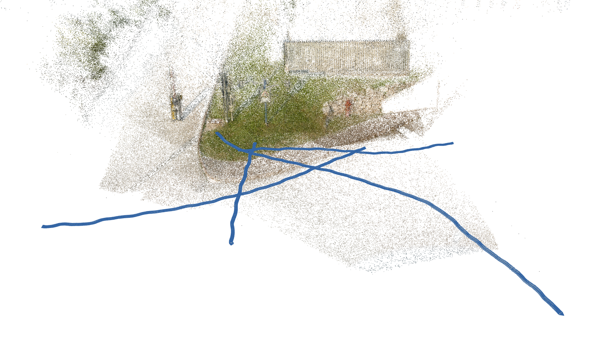
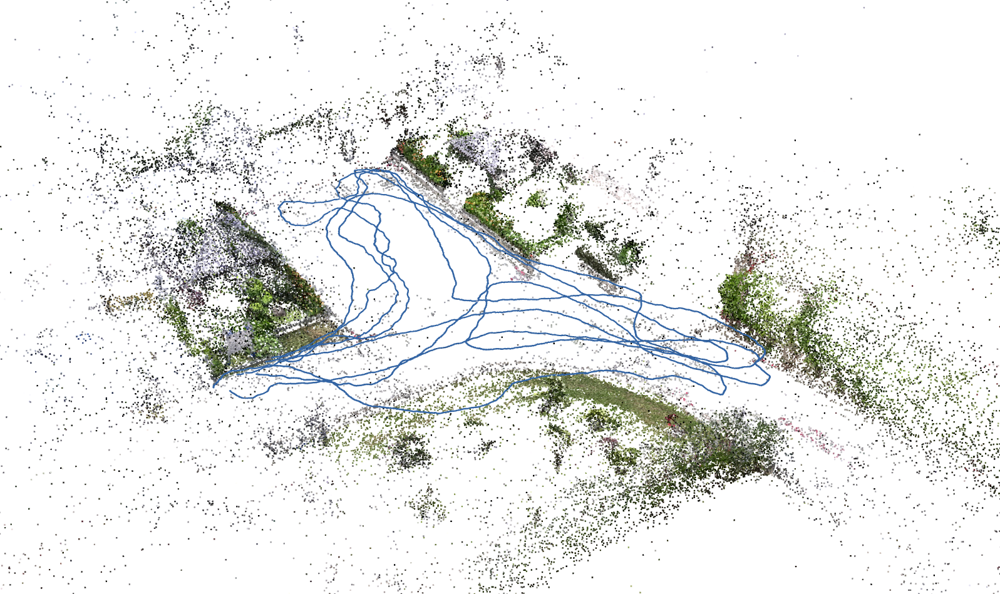
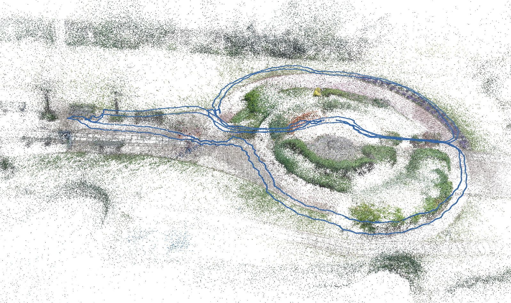

We propose a decentralised view-overlap recognition framework that operates across freely moving cameras without the need of a reference 3D map. Each camera independently extracts, aggregates into a hierarchical structure, and shares feature-point descriptors over time. A view overlap is recognised by view-matching and geometric validation to discard wrongly matched views. The proposed framework is generic and can be used with different descriptors. We conduct the experiments on publicly available sequences as well as new sequences we collected with hand-held cameras. We show that Oriented FAST and Rotated BRIEF (ORB) features with Bags of Binary Words within the proposed framework lead to higher precision and a higher or similar accuracy compared to NetVLAD, RootSIFT, and SuperGlue.
Block diagram of the proposed decentralised framework for cross-camera view-overlap recognition.
For each camera, the framework decouples the extraction of view features \(\boldsymbol{v}_t\) and local features \(\mathcal{F}_t = \{ \boldsymbol{x}_{i,t}, \boldsymbol{d}_{i,t} \}_{i=1}^{F_t}\), for each frame \(I_t\), from the recognition of view overlaps. While features are aggregated into a hierarchical structure over time (bag of binary words, shown as a red registry), each camera shares the set of local features \(\mathcal{Q}_t\) at a pre-defined sharing rate \(f\) and after an initialisation window of length \(L\) (clock symbol). The camera receiving \(\mathcal{Q}_t\) re-aggregates the received local features into the view feature \(\boldsymbol{v}_q\) if their number is higher than \(\mu\), and matches \(\boldsymbol{v}_q\) with all the view features up to frame \(t\). The local features of the matched view \(m_t\), \(\mathcal{F}_m\), whose score \(s_{q,m}\) was the highest and higher than the threshold \(\alpha\), are then matched with the query local features, obtaining \(\hat{\mathcal{M}}_{m,q}\). The matched view \(m_t\) is validated through robust fitting of the epipolar geometry only if the number of inliers \(|\hat{\mathcal{M}}_{m,q}|>\rho\). For keeping the notation simple, we use the camera indexes 1 and 2 only for denoting the shared query features and matched view.
| Scenario | Camera 1 | Camera 2 | Camera 3 | Camera 4 |
| gate | ||||
| courtyard | ||||
| backyard |
Camera sequences for the scenario office can be found at TUM RGB-D SLAM (fr1_desk, fr1_desk2, fr1_room).
Original videos of the camera sequences belonging to the scenario courtyard can be found at the CoSLAM project webpage (the webpage seems currently not available).
We provide RGB image sequences, and calibration and camera poses data for each scenario, as well as annotations (Euclidean distance, angular, distance, visual overlap) for each sequence pairs.
Sparse point clouds and camera poses reconstrcuted using COLMAP to visualise the trajectories performed by the moving cameras.
| gate | courtyard | backyard |
|  |  |  |
If you use the data, please cite:
A. Xompero and A. Cavallaro, Cross-camera view-overlap recognition, International Workshop on Distributed Smart Cameras (IWDSC), European Conference on Computer Vision Workshops, 24 October 2022.
If you have any further enquiries, question, or comments, please contact a.xompero@qmul.ac.uk.